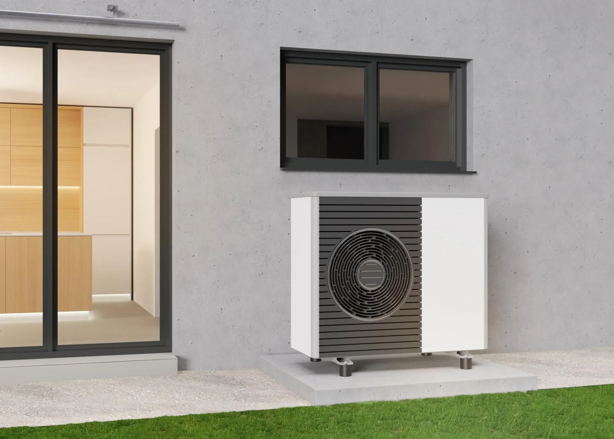
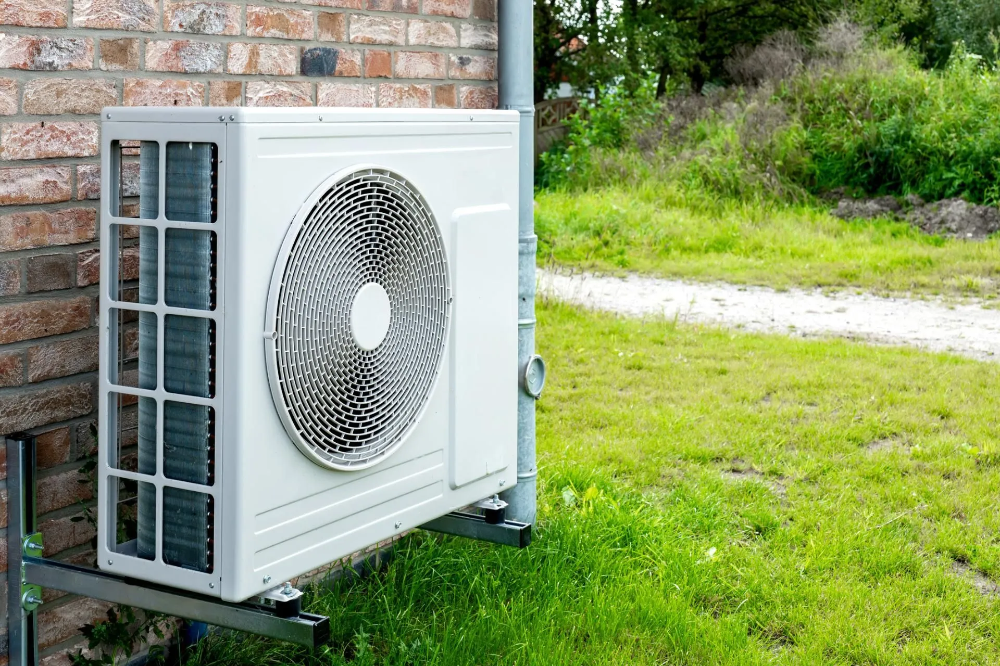

UNA NUOVA IDEA DI COMFORT
Il comfort cambia.
La casa si evolve.
Pompe di calore per il riscaldamento e, dove previsto dal sistema, il raffrescamento. Una scelta da valutare sulle caratteristiche reali del tuo immobile.
Parliamo del tuo impianto
POMPE DI CALORE
La soluzione giusta
parte dalla tua casa.
Una pompa di calore funziona al meglio quando è scelta per il contesto giusto. Valutiamo gli spazi, l’impianto presente e le tue abitudini per definire una soluzione coerente con l’abitazione.
Operiamo a Samarate e in provincia di Varese. Contattaci per descrivere il lavoro e verificare la disponibilità.
Di cosa ci occupiamo
Analisi delle esigenze dell’abitazione
Verifica della compatibilità dell’impianto
Installazione e integrazione del sistema

Attenzione ai dettagli, dall’impianto alle finiture.
DOMANDE UTILI
Facciamo chiarezza.
Una pompa di calore è adatta a ogni casa?
La compatibilità dipende dalle caratteristiche dell’immobile e dell’impianto. Il primo passo è una valutazione tecnica della situazione esistente.
Come posso organizzare il lavoro?
Chiamaci e indica il comune, il tipo di impianto e il lavoro che vorresti realizzare. Definiremo insieme come procedere.
IL PROSSIMO PASSO È SEMPLICE
Raccontaci di cosa
ha bisogno la tua casa.
Un nuovo impianto, una sostituzione, un bagno da ripensare.
Partiamo da una telefonata.